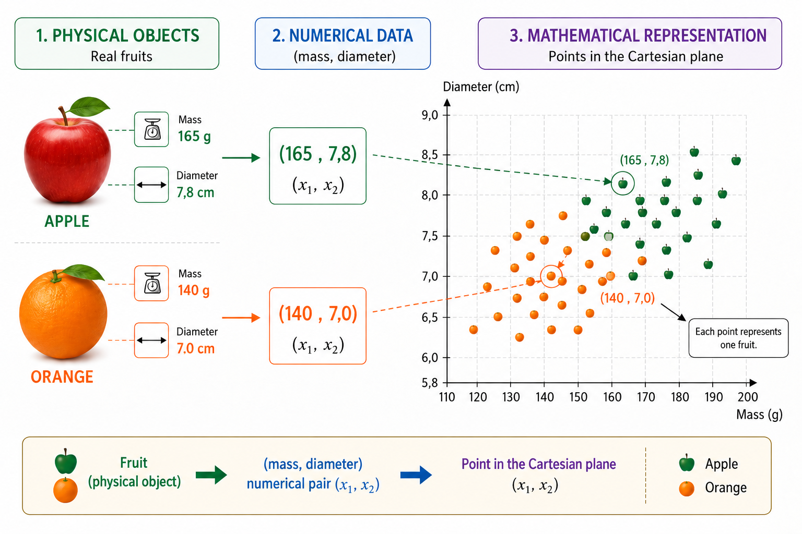
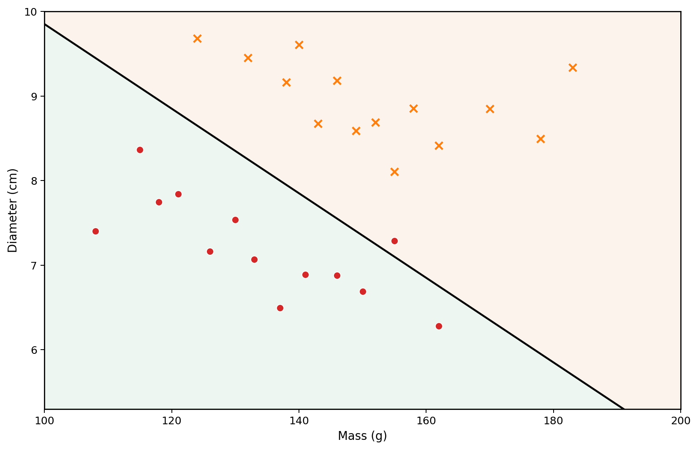
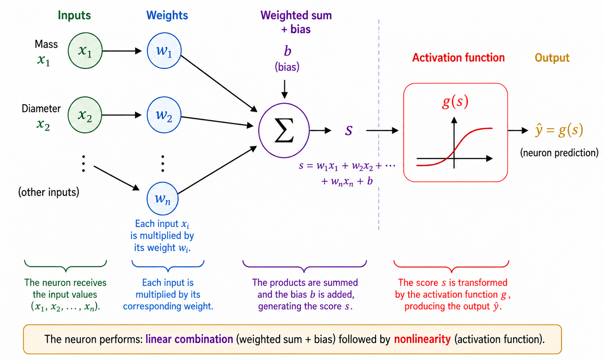
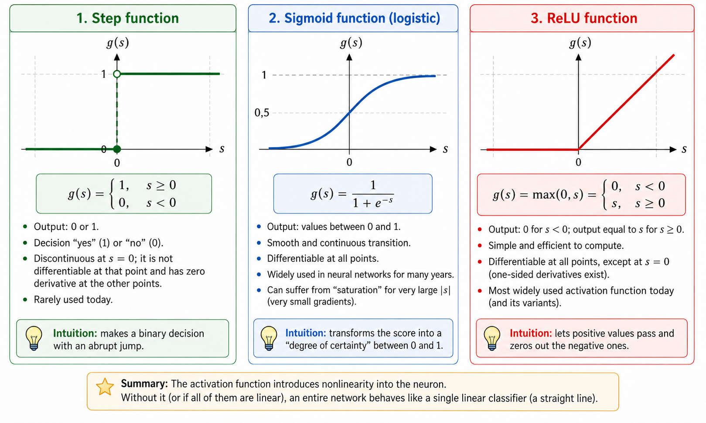
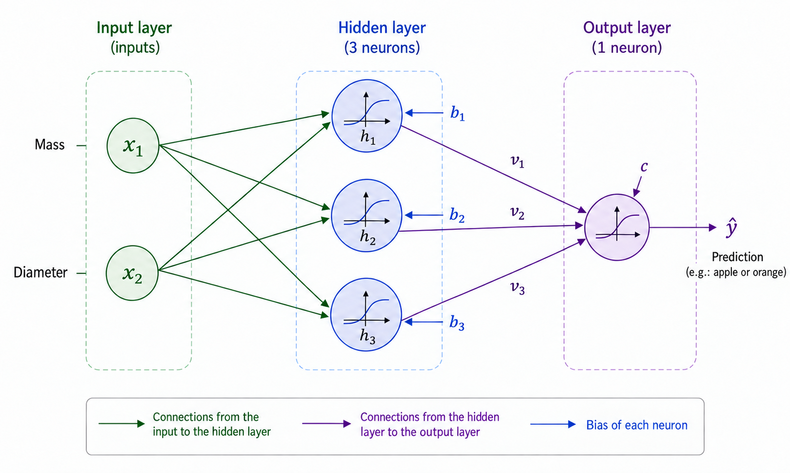
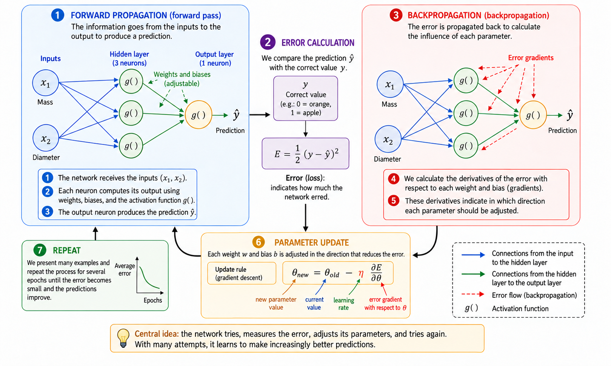
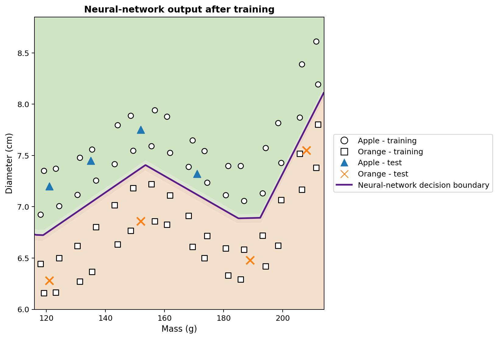

When can a computer learn?
In everyday life, we make classification decisions almost without noticing. By looking at a fruit, we quickly identify it as an apple or an orange; when a message arrives on a phone, we distinguish a legitimate conversation from unwanted advertising; in medical analysis, several measurements may be combined to support a decision; and in financial institutions, multiple pieces of information are evaluated before credit is granted. In all these examples, several characteristics are considered together to produce a response.
In many traditional computer programs, the rules that produce this response are written explicitly by the programmer. This approach works well when the rules are known and can be stated clearly. It becomes less effective when the data are highly variable or when it is difficult to formulate in advance every condition required for a good decision. This leads to a natural question:
Can we build a program that learns a decision rule from
examples instead of receiving the rule in advance?
This is one of the central ideas of machine learning, an area of artificial intelligence concerned with methods that fit models from data . In a supervised-learning problem, the algorithm receives examples together with their correct answers, and we seek a model that can also make useful predictions for cases that were not used during training. Among the many models developed for this purpose, artificial neural networks have become important in applications such as image recognition, language processing, signal analysis, and time-series prediction .
The use of neural networks as a bridge among mathematics, computation, and school education has already been discussed in Professor de Matemática Online by Batista and Martins , who present an activity involving teacher education, Python, and digit recognition. The present article follows a complementary route. Our main goal is to expose the internal mathematics of a small neural network, beginning with analytic geometry and proceeding step by step to gradient computation and a manual implementation of backpropagation.
Despite the sophistication of modern applications, the mathematical core of a neural network can be introduced using relatively familiar ideas. At a basic level, a neural network is a composition of functions whose parameters are adjusted from data. We begin with a simple geometric problem, reinterpret a separating line as an artificial neuron, connect several neurons, study the role of activation functions, and show how derivatives can be used to adjust the network parameters automatically. We then implement a complete small example in Python, keeping a direct correspondence between the equations and the code.
Representing the problem mathematically
To understand how a neural network works, we begin with a deliberately simple problem: distinguishing apples from oranges. A fruit has many characteristics that could be useful for this task, such as color, mass, diameter, texture, and aroma. An initial mathematical model, however, does not need to include all this complexity. We will use only two easily measured quantities: mass, in grams, and diameter, in centimeters.
Each fruit will therefore be represented by an ordered pair \[(x_1,x_2),\] where \[x_1=\text{mass} \qquad\text{and}\qquad x_2=\text{diameter}.\]
Thus, the pair \((155,\;7.2)\) represents a fruit with mass \(155\) g and diameter \(7.2\) cm. By replacing the physical object with two numerical measurements, we associate each fruit with a point in the Cartesian plane: the first coordinate gives its mass and the second its diameter. Figure 1 illustrates this representation for a hypothetical set of apples and oranges.

This transformation changes the apparent nature of the problem. Instead of asking directly how to recognize an apple or an orange, we can ask a geometric question: how can the points belonging to the two classes be separated in the plane? This change of viewpoint is fundamental in machine learning. Images, texts, sounds, and experimental signals must all be converted into numerical representations before they can be processed by an algorithm. In our example, each object has only two coordinates; in real applications, a representation may contain hundreds, thousands, or even millions of components. The principle is the same: each example is associated with a collection of numbers, and the model seeks a rule that maps that representation to the desired answer.
We start with the simplest geometric rule available and ask whether a single straight line can adequately separate the apple points from the orange points.
A straight line as a classifier
Once each fruit has been represented by a point in the Cartesian plane, classification becomes a geometric problem: can a straight line separate the apples from the oranges? This question captures the basic idea of an important family of machine-learning methods known as linear classifiers.
Consider a line crossing the data cloud, as illustrated in Figure 2. The line divides the plane into two half-planes. If most apple points lie on one side and most orange points lie on the other, the position of a new fruit relative to the line can be used as a classification rule. After measuring its mass and diameter, we represent the fruit by a point and determine which side of the line contains that point.

In the Cartesian plane \((x_1,x_2)\), a line can be described by \[w_1x_1+w_2x_2+b=0, \qquad (w_1,w_2)\neq(0,0).\]
The vector \((w_1,w_2)\) is perpendicular to the line and therefore determines its orientation, while the parameter \(b\) contributes to its position. This representation has a small redundancy: multiplying \(w_1\), \(w_2\), and \(b\) by the same nonzero constant produces exactly the same line. Hence, the parameters describing the boundary are not unique. Their numerical interpretation also depends on the scale of the variables. Since mass is measured in grams and diameter in centimeters, the numerical sizes of \(w_1\) and \(w_2\) should not be compared without accounting for the different units.
The line equation itself gives a simple way to determine on which side of the boundary a point lies. Define the score \[s(x_1,x_2)=w_1x_1+w_2x_2+b.\]
If \(s(x_1,x_2)=0\), the point lies on the line. If \(s(x_1,x_2)>0\), it lies in one half-plane; if \(s(x_1,x_2)<0\), it lies in the other. If we decide that positive scores correspond to apples and negative scores to oranges, the rule becomes \[\begin{cases} s(x_1,x_2)\geq 0 & \Longrightarrow \text{apple},\\ s(x_1,x_2)<0 & \Longrightarrow \text{orange}. \end{cases}\]
For example, consider the boundary defined by \[w_1=\frac{1}{10}, \qquad w_2=2, \qquad b=-30.\] For a fruit with mass \(160\) g and diameter \(7.8\) cm, \[\begin{aligned} s &=\frac{1}{10}\times160+2\times7.8-30\\ &=16+15.6-30\\ &=1.6. \end{aligned}\] Because the score is positive, the point lies in the half-plane that we associated with apples. This classifier would therefore label the fruit as an apple.
Not every choice of \(w_1\), \(w_2\), and \(b\) produces a good classification. Some lines separate the two groups poorly, whereas others make fewer errors. The learning problem is precisely to use previously labeled examples to determine parameter values that reduce a measure of model error. Instead of programming the line position directly, we want the algorithm to adjust its coefficients from the data.
A single line can work well when the classes are approximately linearly separable. More complicated data sets may require a nonlinear boundary. Before addressing that limitation, we reinterpret the classifier just constructed as an elementary computational unit: an artificial neuron.
The artificial neuron
In the previous section, the expression \[s=w_1x_1+w_2x_2+b\] was used to determine on which side of a line a fruit lies. The same expression can be viewed as the first stage of the computation performed by an artificial neuron. A neuron receives numerical inputs, combines them using weights and a bias, and then applies a mathematical function to obtain its output.
In our example, the inputs are the mass \(x_1\) and the diameter \(x_2\). Each input is multiplied by a parameter called a weight; the products are added together with a constant term \(b\), called the bias. Figure 3 shows this computation schematically.

The weights determine how changes in the inputs affect the score. If \(x_2\) and all other quantities are held fixed, a variation \(\Delta x_1\) changes \(s\) by \(w_1\Delta x_1\). Similarly, a variation \(\Delta x_2\) changes the score by \(w_2\Delta x_2\). The sign matters as well: a positive weight makes an increase in the input increase the score, whereas a negative weight produces the opposite effect. This interpretation must be used carefully when different variables have different units and scales. For this reason, practical implementations often normalize or standardize their input data before training.
The bias \(b\) is the constant term in the affine transformation. Geometrically, it allows the decision boundary to shift. If \(b=0\), the equation \[w_1x_1+w_2x_2=0\] forces the line to pass through the origin. With a bias, the boundary can move to other locations. Equivalently, when \(x_1=x_2=0\), the score is simply \(s=b\).
The score need not be the final neuron output. In general, an activation function \(g\) is applied to it: \[\widehat{y}=g(s)=g\left(w_1x_1+w_2x_2+b\right).\] Thus the computation has two stages, \[\begin{aligned} s &= w_1x_1+w_2x_2+b,\\[4pt] \widehat{y} &= g(s). \end{aligned}\]
Using the parameter values from the previous section gives \(s=1.6\). If we choose the step function \[g(s)= \begin{cases} 1, & s\geq0,\\ 0, & s<0, \end{cases}\] then \(\widehat{y}=g(1.6)=1\). Under our convention, the fruit is classified as an apple. With this activation, the decision changes when \(s\) crosses zero, so the class boundary is exactly \[w_1x_1+w_2x_2+b=0.\]
A single neuron is therefore a simple mathematical object with adjustable parameters. Its real importance comes from connecting many such units. Before constructing a network, however, we need to understand why the activation function is essential.
Why do we need an activation function?
A neuron first computes a score using an affine transformation and only then applies an activation function. This second stage is essential if a neural network is to represent complicated relations. To see why, imagine a network in which no activation functions are used. Every unit would then have the form \[y=w_1x_1+w_2x_2+b.\]
For a one-dimensional illustration, suppose a first unit produces \[h=ax+b\] and a second computes \[y=ch+d.\] Substitution gives \[y=c(ax+b)+d=acx+(cb+d),\] which is still an affine function of \(x\). The same statement holds in several dimensions: a composition of affine transformations is still affine. Therefore, adding many layers without a nonlinear operation does not make the network fundamentally more expressive; the entire composition could be replaced by a single affine transformation.
An activation function breaks this limitation. After computing the score \(s\), the neuron applies a usually nonlinear map \[h=g(s).\] When several such units are connected, the resulting composition can no longer be reduced to one affine transformation. This allows the network to construct more complicated decision boundaries.
The simplest activation is the step function, \[g(s)= \begin{cases} 1, & s\geq0,\\ 0, & s<0. \end{cases}\] It produces a binary decision and is very useful for understanding classification. Its derivative, however, is zero for \(s\neq0\) and undefined at \(s=0\). Since gradient-based training uses derivatives to determine how the parameters should change, the step function is not suitable for that training mechanism.
One alternative is the sigmoid function, \[\sigma(s)=\frac{1}{1+e^{-s}}.\] It maps every real number to a value strictly between \(0\) and \(1\). For very negative \(s\), the output approaches \(0\); for very positive \(s\), it approaches \(1\); between these extremes, the transition is smooth. The sigmoid is differentiable everywhere, with \[\sigma'(s)=\sigma(s)\bigl(1-\sigma(s)\bigr).\] Because its outputs lie between \(0\) and \(1\), it is often used in the output layer of a binary classifier. Under a probabilistic formulation with an appropriate loss function, the output can be interpreted as an estimate of the probability of the class represented by \(1\). In hidden layers, however, the sigmoid can create a difficulty: for inputs with large magnitude, its derivative becomes very small, contributing to the vanishing-gradient problem in deep networks.
A widely used hidden-layer activation is the ReLU (Rectified Linear Unit), \[\operatorname{ReLU}(s)=\max(0,s) = \begin{cases} 0, & s<0,\\ s, & s\geq0. \end{cases}\] Although it is composed of two linear pieces, ReLU is not globally linear. Its derivative is \(0\) for \(s<0\) and \(1\) for \(s>0\). At \(s=0\) the usual derivative does not exist, and software implementations adopt a convention for the gradient. For positive inputs, the derivative does not shrink as \(s\) grows, avoiding one of the saturation mechanisms of the sigmoid.
Figure 4 compares these three activations visually: the abrupt jump of the step function, the smooth sigmoid transition, and the change in slope of ReLU.

Their main properties are summarized below.
| Function | Output | Derivative | Typical use |
|---|---|---|---|
| Step | \(\{0,1\}\) | Zero for \(s\neq0\); undefined at \(s=0\) | Historical models and didactic examples |
| Sigmoid | \((0,1)\) | Exists for every \(s\) | Output layer in binary classification |
| ReLU | \([0,\infty)\) | \(0\) for \(s<0\) and \(1\) for \(s>0\) | Hidden layers |
The details of these functions differ, but their common conceptual role is to introduce nonlinearity. That nonlinearity is what allows the small network in the next section to represent relations that a single straight line cannot capture.
For readers who wish to go further, Haykin provides a classical treatment of neural networks, while Goodfellow, Bengio, and Courville discuss activation functions and deep-network training in a broader setting. Nielsen’s freely available text is especially accessible for developing intuition about neurons, activations, and learning.
Building a small neural network
We now consider a network with two inputs, one hidden layer containing three neurons, and one output neuron. The inputs remain \[x_1=\text{mass}, \qquad x_2=\text{diameter},\] and both are supplied to each hidden neuron, as shown in Figure 5.

Let the hidden-layer outputs be \(h_1\), \(h_2\), and \(h_3\). Each neuron receives the same two inputs but has its own weights and bias: \[\begin{aligned} h_1&=g\left(w_{11}x_1+w_{12}x_2+b_1\right),\\[4pt] h_2&=g\left(w_{21}x_1+w_{22}x_2+b_2\right),\\[4pt] h_3&=g\left(w_{31}x_1+w_{32}x_2+b_3\right). \end{aligned}\]
Although all three neurons receive the same mass and diameter, they can produce different responses because their parameters are different. During training, those parameters are adjusted so that the intermediate activations become useful for classification.
The three quantities \(h_1\), \(h_2\), and \(h_3\) are then passed to the output neuron, which computes \[s_{\mathrm{out}}=v_1h_1+v_2h_2+v_3h_3+c\] and produces \[\widehat{y}=g_{\mathrm{out}}\left(s_{\mathrm{out}}\right).\] For our binary problem, we use a sigmoid output: \[\widehat{y}=\sigma\left(v_1h_1+v_2h_2+v_3h_3+c\right), \qquad 0<\widehat{y}<1.\]
Using \(y=1\) for apple and \(y=0\) for orange, a threshold of \(0.5\) gives the class decision \[\widehat{y}\geq0.5 \Longrightarrow \text{apple}, \qquad \widehat{y}<0.5 \Longrightarrow \text{orange}.\] Values near \(1\) are therefore strongly associated with apples, while values near \(0\) are associated with oranges. As noted earlier, interpreting \(\widehat{y}\) numerically as a probability requires additional assumptions about the model and its training. For the classification rule used here, it is enough to regard \(\widehat{y}\) as a continuous network output.
The central feature of this architecture is the intermediate representation \[(x_1,x_2) \longrightarrow (h_1,h_2,h_3) \longrightarrow \widehat{y}.\] The network receives two features and constructs three new quantities before producing the final answer. These activations are not chosen manually: they depend on the weights and biases and therefore change as the parameters are trained.
Despite its small size, the network already has thirteen adjustable parameters. The three hidden neurons contain \[3(2+1)=9\] parameters, and the output neuron contributes \[3+1=4.\] Therefore, \[9+4=13.\]
The same count becomes transparent in matrix notation. Define \[\mathbf{x}= \begin{bmatrix} x_1\\x_2 \end{bmatrix}, \qquad W^{(1)}= \begin{bmatrix} w_{11}&w_{12}\\ w_{21}&w_{22}\\ w_{31}&w_{32} \end{bmatrix}, \qquad \mathbf{b}^{(1)}= \begin{bmatrix} b_1\\b_2\\b_3 \end{bmatrix}.\] Then the hidden layer can be written compactly as \[\mathbf{h}=g\left(W^{(1)}\mathbf{x}+\mathbf{b}^{(1)}\right),\] where \(g\) acts component by component. For the output, \[\widehat{y} = \sigma\left(W^{(2)}\mathbf{h}+b^{(2)}\right),\] with \[W^{(2)}= \begin{bmatrix} v_1&v_2&v_3 \end{bmatrix}.\]
This notation anticipates the structure that will appear in the Python program. When a fruit is presented at the input and we compute the successive activations until obtaining \(\widehat{y}\), we perform forward propagation or a forward pass. The central question remains: how can the thirteen parameters be determined automatically so that the predictions fit the data?
How does a neural network learn?
The weights and biases are not known in advance. They must be adjusted using examples for which the correct answer is available. This process is called training and can be summarized by the cycle \[\boxed{\text{predict}} \longrightarrow \boxed{\text{measure the error}} \longrightarrow \boxed{\text{adjust the parameters}} \longrightarrow \boxed{\text{repeat}}.\]
Consider a fruit with mass \(140\) g and diameter \(7.0\) cm whose correct class is orange, so \(y=0\). Suppose that, at some point during training, the network outputs \(\widehat{y}=0.80\). One simple measure of the discrepancy between prediction and target is the squared error \[E=\frac{1}{2}\left(y-\widehat{y}\right)^2.\] For this example, \[E=\frac{1}{2}(0-0.80)^2=0.32.\]
This expression is a loss function for one example. Since it is a square, \(E\geq0\), and predictions farther from the target receive larger penalties. The factor \(1/2\) does not change the location of the minimum but simplifies derivatives. Binary classification often uses other losses, especially cross-entropy. We use squared error here because its algebra is transparent and it is sufficient for introducing optimization and backpropagation .
If the training set contains \(N\) examples, one global measure is the mean loss \[J=\frac{1}{N}\sum_{i=1}^{N}E_i.\] Every prediction depends on the network weights and biases, so \(J\) also depends on all these parameters. Training means searching for parameter values that make \(J\) small.
To understand the adjustment mechanism, first imagine that all parameters except a single weight \(w\) are held fixed. We may then think of the loss as a function \(J=J(w)\). Figure 6 summarizes the basic stages of training that we now examine.

For readers with little calculus background, a derivative can be interpreted here as a measure of local sensitivity: it tells us how a small change in one parameter tends to change the loss. Its sign indicates which direction locally increases or decreases the function, while its magnitude measures the strength of that local variation.
The derivative \[\frac{\partial J}{\partial w}\] gives the local slope. If it is positive, a small increase in \(w\) tends to increase \(J\), so the weight should move in the opposite direction. If it is negative, increasing \(w\) tends locally to decrease \(J\). Both cases are described by \[w_{\mathrm{new}} = w_{\mathrm{old}} - \eta\frac{\partial J}{\partial w},\] which is the basic idea of gradient descent. The positive number \(\eta\) is the learning rate; it controls the step size. A very small value may make training slow, while an excessively large value may cause oscillation or instability.
For a network with many parameters, let \(\theta\) denote any weight or bias. The update becomes \[\theta_{\mathrm{new}} = \theta_{\mathrm{old}} - \eta\frac{\partial J}{\partial\theta}.\] The collection of all partial derivatives forms the gradient of the loss. Geometrically, the gradient points in the direction of fastest local increase, so the negative gradient gives a local direction of decrease.
We still need to compute these derivatives when the network is a composition of several functions. During the forward pass, information travels as \[\text{inputs} \longrightarrow \text{hidden layer} \longrightarrow \text{output}.\] To determine how a parameter in an early layer affects the loss, we mathematically follow the chain of dependencies in the reverse direction. This procedure is called backpropagation. It is essentially a systematic and efficient application of the chain rule. Rumelhart, Hinton, and Williams provide a classical reference for the popularization of this procedure in networks with hidden layers; Nielsen gives a detailed and particularly didactic derivation.
For a simple dependency chain in which \(E\) depends on \(\widehat{y}\), which depends on an activation \(h\), which in turn depends on a weight \(w\), the chain rule gives \[\frac{\partial E}{\partial w} = \frac{\partial E}{\partial\widehat{y}} \, \frac{\partial\widehat{y}}{\partial h} \, \frac{\partial h}{\partial w}.\] Each factor describes one stage of the influence of \(w\) on the final loss. Larger networks contain many such chains, and backpropagation organizes the calculation so that intermediate derivatives can be reused instead of recomputed separately for every parameter.
In practice, training uses many examples. One complete pass through the training set is called an epoch. Parameters may be updated after each example, as in the didactic program used later in this article, or after small groups of examples called mini-batches, which is common in larger networks. In either case, the cycle of predictions, losses, gradients, and updates is repeated over many epochs.
A concrete way to visualize this evolution is to follow the prediction for one fixed example at different training stages. Consider again the fruit with mass \(140\) g and diameter \(7.0\) cm, whose correct class is orange. Table 1 shows a hypothetical progression. These values do not correspond to a particular execution; they only illustrate the mechanism.
| Epoch | Prediction \(\widehat{y}\) | Loss \(E\) | Classification |
|---|---|---|---|
| 1 | 0.86 | 0.37 | Apple |
| 5 | 0.71 | 0.25 | Apple |
| 10 | 0.55 | 0.15 | Apple |
| 20 | 0.31 | 0.05 | Orange |
| 40 | 0.09 | 0.004 | Orange |
At the beginning, the output is close to \(1\) and the fruit is incorrectly classified as an apple. As the parameters are adjusted, the prediction decreases and eventually crosses the threshold \(0.5\), producing the correct class. What changes during this process are the numerical values of the weights and biases; the network architecture remains fixed.
Reducing the loss on the training data is not the final objective. A useful network must also make good predictions for examples that were not used to fit the parameters. This ability is called generalization. When a model adapts too closely to peculiarities of the training set and performs worse on new data, we have overfitting. In more careful evaluations, data are commonly separated into training, validation, and test sets: the first fits the parameters, the second supports choices made while developing the model, and the third is reserved for final evaluation. Broader discussions of generalization and model evaluation can be found in Faceli et al. and Goodfellow, Bengio, and Courville .
We have therefore reached the mathematical meaning of learning in a neural network. In this context, to learn means to adjust the parameters of a composite function so as to reduce a measure of error on data and, ideally, to generalize to new examples. The network predicts, computes a loss, uses derivatives to determine how its parameters influence that loss, and makes a sequence of small corrections.
From mathematics to Python
We now move from equations to an executable program. The purpose is
not to use a specialized neural-network library but to implement
directly, with NumPy, the mathematical operations developed
throughout the article . This makes it possible to see,
line by line, how linear combinations, activation functions, loss
computation, backpropagation, and gradient descent appear in code.
For a more convincing final example, we use a synthetic data set spread over a wider mass–diameter domain. We continue to work with only two physical features — mass in grams and diameter in centimeters — but now distribute \(64\) training examples across a broad region of the plane and reserve eight additional examples for an illustrative test. The data remain synthetic and stay within plausible ranges for apples and oranges. They are constructed to produce a nonlinear decision boundary without concentrating all points into a few excessively artificial clusters.
The geometric idea is simple. We define a reference curve in the mass–diameter plane, place apples in two bands above that curve, and place oranges in two bands below it. Small deterministic perturbations are added to both mass and diameter so that the observations occupy a wider region. The resulting example is richer than the earlier illustrations: it contains more points, the data are spread over the domain, and the appropriate decision boundary is clearly more curved than a straight line.
For this final computational experiment, we enlarge the hidden layer to twelve ReLU neurons. This does not change the conceptual structure studied in the previous sections; it only increases the network’s capacity to represent a more elaborate boundary. Instead of the \(13\) parameters in the three-neuron pedagogical network, we now have \(49\) adjustable parameters: \(24\) weights and \(12\) biases in the first layer, followed by \(12\) weights and one bias in the output layer. The equations retain exactly the same form; only the vectors and matrices become larger.
The complete program is shown below.
import numpy as np
import matplotlib.pyplot as plt
from matplotlib.lines import Line2D
def relu(s):
return np.maximum(0, s)
def relu_derivative(s):
return (s > 0).astype(float)
def sigmoid(s):
return 1 / (1 + np.exp(-s))
def base_boundary(m):
return 6.68 + 0.74*np.exp(-((m-155)/20)**2) \
+ 1.50/(1 + np.exp(-(m-202)/5))
def build_data():
masses_1 = np.linspace(118, 212, 16)
masses_2 = masses_1 + np.array([
1.2,-1.1,0.8,-1.3,1.0,-0.8,1.1,-1.0,
1.3,-0.9,0.9,-1.2,1.0,-1.0,0.8,-0.7
])
k = np.arange(16)
a1 = np.column_stack([
masses_1,
base_boundary(masses_1) + 0.22 + 0.05*np.sin(0.8*k)
])
a2 = np.column_stack([
masses_2,
base_boundary(masses_2) + 0.58 + 0.06*np.cos(0.45*k)
])
o1 = np.column_stack([
masses_1,
base_boundary(masses_1) - (0.22 + 0.04*np.cos(0.7*k))
])
o2 = np.column_stack([
masses_2,
base_boundary(masses_2) - (0.55 + 0.05*np.sin(0.5*k))
])
X_train = np.vstack([a1, a2, o1, o2])
y_train = np.array([1.0]*32 + [0.0]*32)
X_test = np.array([
[121.0, 7.20], [135.0, 7.45],
[152.0, 7.75], [171.0, 7.32],
[121.0, 6.28], [152.0, 6.86],
[189.0, 6.48], [208.0, 7.55]
])
y_test = np.array([1,1,1,1,0,0,0,0], dtype=float)
return X_train, y_train, X_test, y_test
def predict(X, mean, std, W1, b1, W2, b2):
Xn = (X - mean) / std
outputs = []
for x in Xn:
h = relu(W1 @ x + b1)
y_hat = sigmoid(W2 @ h + b2)
outputs.append(y_hat)
return np.array(outputs)
X_train, y_train, X_test, y_test = build_data()
mean = X_train.mean(axis=0)
std = X_train.std(axis=0)
Xn = (X_train - mean) / std
rng = np.random.default_rng(42)
W1 = 0.1 * rng.standard_normal((12, 2))
b1 = np.zeros(12)
W2 = 0.1 * rng.standard_normal(12)
b2 = 0.0
eta = 0.05
n_epochs = 6000
history = []
for epoch in range(n_epochs):
for i in rng.permutation(len(Xn)):
x = Xn[i]
target = y_train[i]
z1 = W1 @ x + b1
h = relu(z1)
z2 = W2 @ h + b2
y_hat = sigmoid(z2)
delta2 = (y_hat - target) * y_hat * (1 - y_hat)
dW2 = delta2 * h
db2 = delta2
delta1 = (delta2 * W2) * relu_derivative(z1)
dW1 = np.outer(delta1, x)
db1 = delta1
W1 -= eta * dW1
b1 -= eta * db1
W2 -= eta * dW2
b2 -= eta * db2
errors = []
for x, target in zip(Xn, y_train):
h = relu(W1 @ x + b1)
y_hat = sigmoid(W2 @ h + b2)
errors.append(0.5 * (target - y_hat)**2)
history.append(np.mean(errors))
def make_figure():
masses = np.linspace(116, 214, 500)
diameters = np.linspace(6.0, 8.85, 500)
M, D = np.meshgrid(masses, diameters)
grid = np.column_stack([M.ravel(), D.ravel()])
P = predict(grid, mean, std, W1, b1, W2, b2).reshape(M.shape)
fig, ax = plt.subplots(figsize=(9.2, 6.3))
ax.contourf(
M, D, P,
levels=[0.0, 0.25, 0.50, 0.75, 1.0],
colors=["#f3e0cb", "#ecd5c4", "#dbe7cf", "#cde3bf"],
alpha=0.95
)
ax.contour(M, D, P, levels=[0.5],
colors=["#5a1a8a"], linewidths=2.2)
mask = y_train == 1.0
ax.scatter(X_train[mask,0], X_train[mask,1], marker="o",
s=48, facecolors="white", edgecolors="black",
linewidths=1.1, label="Apple - training")
mask = y_train == 0.0
ax.scatter(X_train[mask,0], X_train[mask,1], marker="s",
s=48, facecolors="white", edgecolors="black",
linewidths=1.1, label="Orange - training")
mask = y_test == 1.0
ax.scatter(X_test[mask,0], X_test[mask,1], marker="^",
s=92, color="#1f77b4", label="Apple - test")
mask = y_test == 0.0
ax.scatter(X_test[mask,0], X_test[mask,1], marker="x",
s=110, color="#ff7f0e", linewidths=2.0,
label="Orange - test")
ax.set_xlabel("Mass (g)")
ax.set_ylabel("Diameter (cm)")
ax.set_title("Neural-network output after training")
handles = [
Line2D([0],[0], marker='o', markersize=9,
markerfacecolor='white', markeredgecolor='black',
linestyle='None', label='Apple - training'),
Line2D([0],[0], marker='s', markersize=9,
markerfacecolor='white', markeredgecolor='black',
linestyle='None', label='Orange - training'),
Line2D([0],[0], marker='^', markersize=9, color='#1f77b4',
linestyle='None', label='Apple - test'),
Line2D([0],[0], marker='x', markersize=10, color='#ff7f0e',
linestyle='None', label='Orange - test'),
Line2D([0],[0], color='#5a1a8a', lw=2.2,
label='Neural-network decision boundary')
]
ax.legend(handles=handles, loc='center left',
bbox_to_anchor=(1.02, 0.5), frameon=True)
fig.tight_layout()
plt.show()Although the code is longer than the first equations studied in the
article, its structure remains transparent. The function
build_data() automatically generates the \(64\) training examples and the eight
illustrative test examples. We then standardize both variables according
to \[x_j^{\ast}=\frac{x_j-\mu_j}{\sigma_j},\]
where \(\mu_j\) and \(\sigma_j\) are computed from the training
set only. This prevents the test set from influencing parameter fitting
and also puts mass and diameter on comparable numerical scales.
The forward pass does not change in essence. The only difference is that the first layer now produces a vector of twelve hidden activations. In matrix notation, \[\mathbf{z}^{(1)}=W^{(1)}\mathbf{x}+\mathbf{b}^{(1)}, \qquad \mathbf{h}=\operatorname{ReLU}(\mathbf{z}^{(1)}),\] \[z^{(2)}=W^{(2)}\mathbf{h}+b^{(2)}, \qquad \widehat{y}=\sigma(z^{(2)}).\] These four lines still contain the mathematical core of the algorithm. Training also preserves the logic introduced earlier: compute a prediction, measure its error, propagate sensitivity information backward using derivatives, and update the parameters by small gradient-descent steps.
In the code, backpropagation at the output layer appears in
delta2 = (y_hat - target) * y_hat * (1 - y_hat)and propagation to the hidden layer appears in
delta1 = (delta2 * W2) * relu_derivative(z1)followed by updates of all weights and biases. Since the examples are shuffled at every epoch and the parameters are updated after each observation, this implementation is an elementary form of stochastic gradient descent.
With the random seed and hyperparameters used here, the final mean loss is on the order of \(10^{-5}\) to \(10^{-4}\), and all \(64\) training examples together with the eight illustrative test examples receive the expected classification. This should not be interpreted as a rigorous statistical performance assessment: the data are synthetic and were constructed for pedagogical purposes. Their role is to show, in a less trivial setting, how a small neural network can learn a clearly nonlinear decision boundary.
Figure 7 shows the final program output in the mass–diameter plane. All training points are displayed. The highlighted curve is the level \(\widehat{y}=0.5\) and represents the decision boundary learned by the network; the shaded regions indicate the two predicted classes. Circles denote training apples, squares training oranges, triangles test apples, and crosses test oranges. The legend is placed outside the main plotting region so that no data point is hidden.

We began with a straight line separating two simple groups of points and ended with a richer computational example in which a curved boundary emerges from the automatic adjustment of network parameters. Nothing mysterious has been added to the mathematics: the implementation simply organizes and repeats, on a larger scale and at high speed, affine combinations, activation functions, derivatives, matrix products, and gradient-descent updates .
All computational material associated with this article — including the code and an executable Google Colab notebook — is available at https://neuralmath.org, providing a single point of access for readers who wish to explore, reproduce, or adapt the examples.